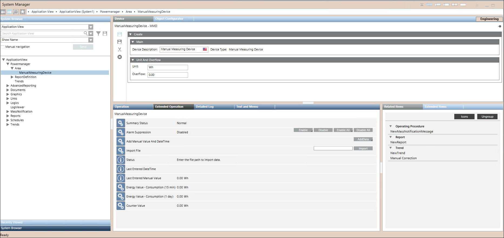
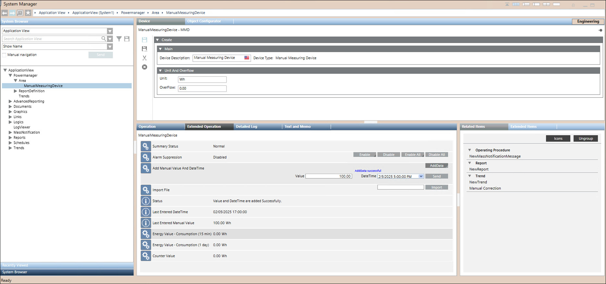

Create and Configure Device
For background information, see the reference section.
You can create a new device in an area or within a sector that you have created.
- System Manager is in Engineering mode.
- In System Browser, select Application View.
- Navigate to Powermanager > [Area] OR [Sector].
- Click the Area/Sector tab.
- Click Create and select Create Device.
- A list of device groups displays in a tabular format.
- Select Logical Devices tab.

- Select device type as Manual Measuring Device.
- Under Main expander Device Type is displayed as Manual Measuring Device.

- Under Unit and Overflow expander enter Unit and Overflow parameters for the device.
NOTE:
- For Unit, provide proper SI units. For example, (Volume → m³, L, cm³), (Flow → m³/s, L/s, cfm), (Energy → J, kWh, Calorie), and (Power → W, kW).
- You cannot enter m raise to 3 as it is not supported in Unit entry, you can use m3 or m^3 instead.
- For Overflow you can enter number with decimal points.
- For Overflow entered value should be greater than the previously saved overflow value. - Click Save.
- The Save Object As dialog box displays.
- Enter a name and description for the device.
NOTE: For Device Name, Area Name, Sector Name, and Report Name, Powermanager only accepts names containing the following characters: 0-9, A-Z, _, a-z, ö, ä, ü, ß, Ü, Ö, and Ä. Other characters are not permitted. - The devices are created and configured and are added to the System Browser.
- Select the created device from the System Browser.
- Navigate to Extended Operations tab > Add Manual Value And DateTime.

- Click AddData.
- Enter Value.
Conditions to be followed for entering the value:
1. Manual entered value must be less than the overflow value.
2. Entered value should be greater than previous value and less than next value for selected datetime.
3. Negative values are not allowed. 
NOTE 1: Conditions for decimal separator used in Values field :
A dot (".") is used as the decimal separator in English-speaking regions (for example, "12.5").
A comma (",") is used as the decimal separator, common in many European regions (for example, "12,5").
In both cases, the placement of the decimal separator and thousands separator is reversed.NOTE 2: Ensure the correct decimal separator is used for entering values based on your systems regional settings to avoid data entry errors or import issues.
- Select the desired DateTime from the dropdown menu.
Conditions to be followed for entering the datetime:
1. Ensure the time interval is always 15 minutes, with seconds set to zero.
2. Previous datetime is allowed.
3. Future datetime is not allowed. - Click Send.
- Status message is shown in the Status field for the response.
- Last entered DateTime will be displayed in Last Entered DateTime field when save is successful.
- Last entered Manual Value will be displayed in Last Entered Manual Value field when save is successful.
NOTE: You can view the last entered value in Flex Operating view.
Manual Measuring Device is available in Flex.